1. 로그인 전
웹 기준 d551688

Flutter BEFORE d551688
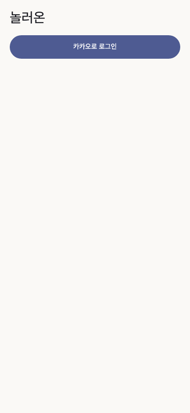
Flutter AFTER de56652
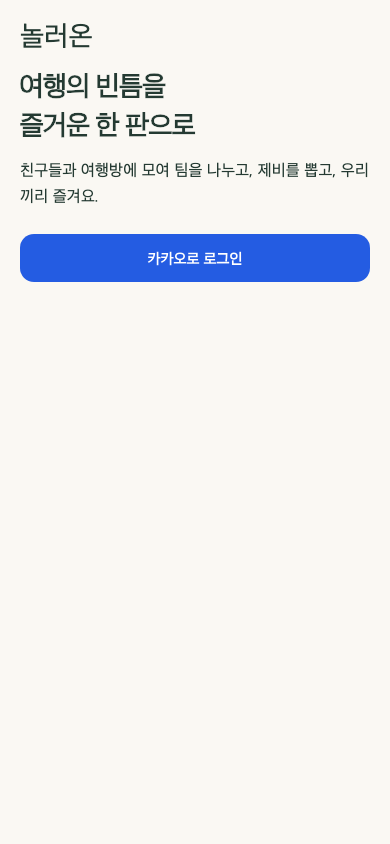
합성 데이터로 실제 UI를 렌더한 390×844 비교입니다. Flutter는 widget 렌더, 웹은 Chromium viewport 캡처입니다.
실제 로그인·API·실기기 인수는 검증하지 않았습니다. 동일 인원/팀 결과입니다. Flutter 양쪽 모두 테스트 엔진의 null-font Ahem을 피하기 위해 미지정 fontFamily만 한글폰트로 보충하고 공개 아바타 디코딩을 기다렸습니다. 크기·두께·색·문구는 앱 그대로입니다.


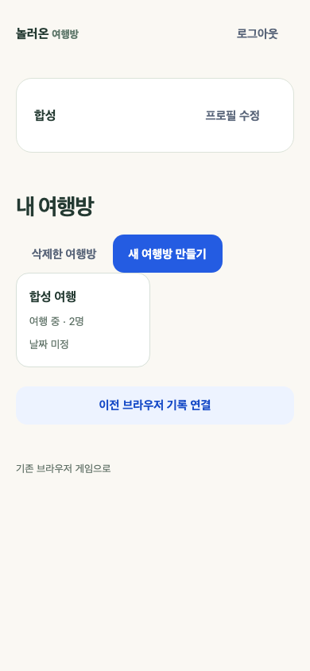
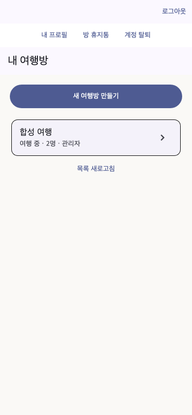
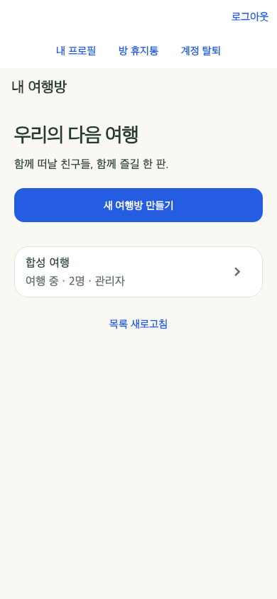
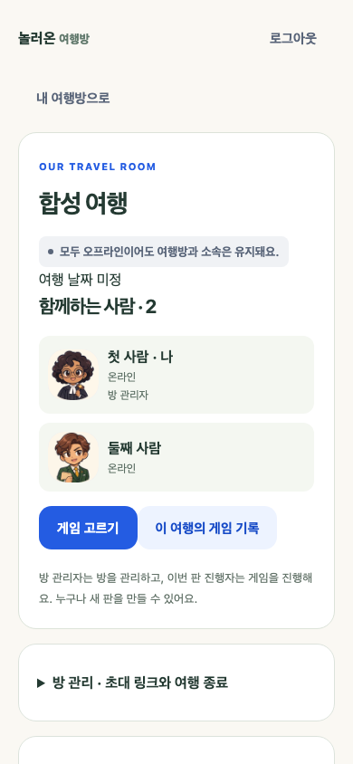
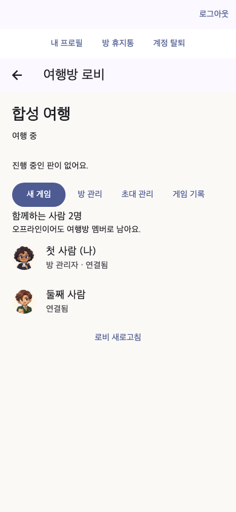

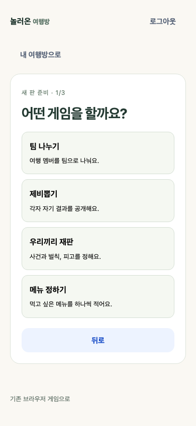
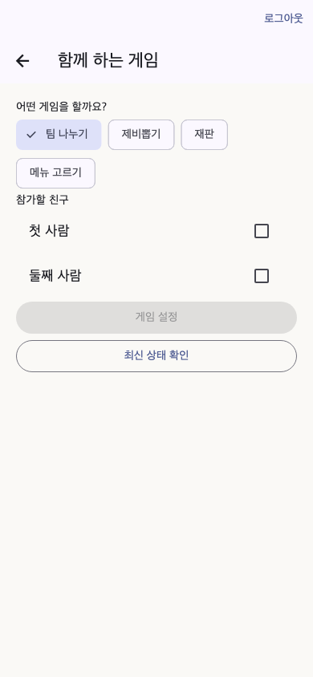
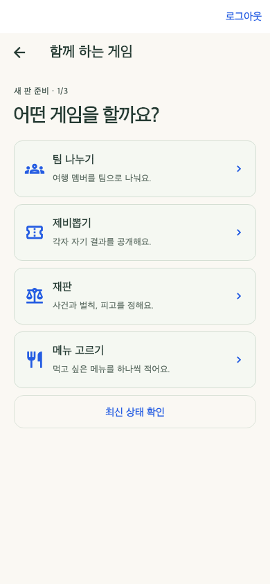
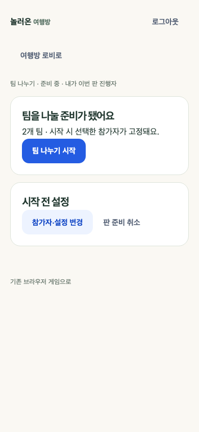
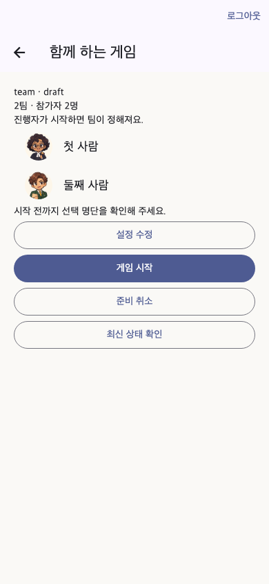

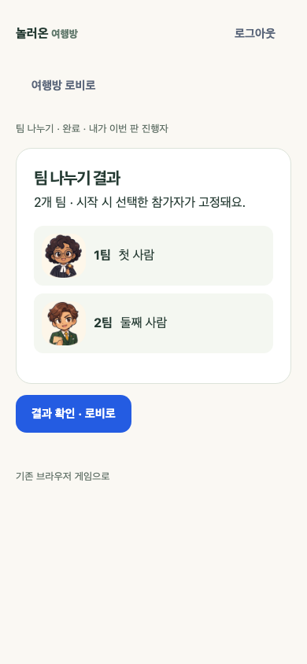
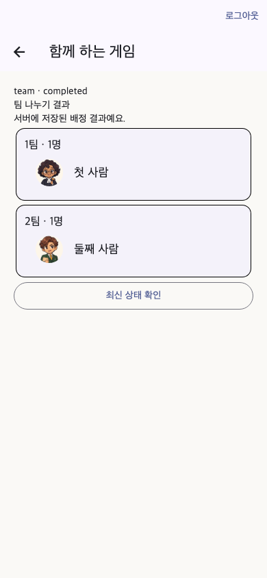
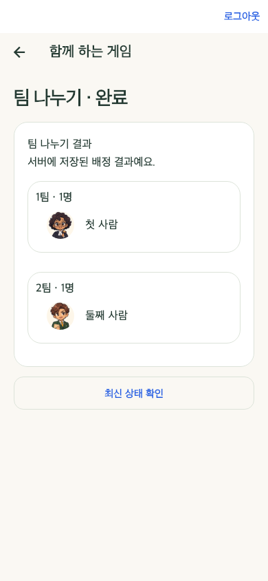